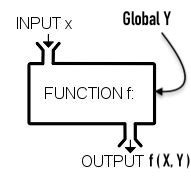
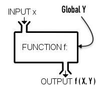

Beginning Our Javascript Journey
It's long and there are many layers
MCC: Section 2
It's long and there are many layers
V8, Spider Monkey, Webkit/Nitro, Chakra(deprecated)
Blink, Webkit, Gecko
Interpreters
Just in time Compilers (JIT) vs. Ahead of time Compliers (AOH)
Low Level vs High Level Languages
Source code, Byte Code, Machine Code, Binary Code 101011

Why all the baggage?

The Basic Data Types
undefinedNumberStringBooleannullBigIntSymbolUse typeof operator to check types
typeof 'hello' // 'string'
typeof 100 // 'number'
typeof false // 'boolean'
nullundefined0.1 + 0.2 = ?InfinityNaNBigInt provides arbitray precision & fixes decimal bug in Numbers. Post-fix with "n": 30903920193n
const biggestNumber = 9007199254740991n (but not the biggest BigInt)
NaN literal use Number.isNaN()NaN)isNaN()isNaN('hello') // true
Number.isNaN('hello') // false
Number.isNaN(NaN) // truetruefalseTruthy or Falsey?
Let's see it in action:
Boolean(null)Boolean(undefined)Boolean('0')Boolean("")Boolean('false')var myStr = 'Hello World'
'...' // Single Quotes
"..." // Double Quotes
'...' + '...' // Concatenation
'Hello' + ' ' + 'World' // 'Hello World'
Escape characters with \
'Hello[0]' // 'H'.length => 'Hello'.length // 55 = 4 // Syntax Error
var str = 'hello'
str[0] = 'p'
console.log(str) // 'hello'
You must reassign to the variable
to change a variable's value
Type Casting
String()Number()Boolean()Types refer to the data types, such as primitives: string, boolean, etc
Javascript is a Dynamically typed language - variables may change their type
Coercion refers to the JS engine changing the data type during an operation
var
let
const
// single line comment
/* Multiline
comment */
Definition
A variable is a named container for a value, such as a primitive.
The name that refers to a variables is also called an identifier
var; // Declaration
var x; // Initialization;
var y = 500; // Assignment
var y = 'Hello!'; //Re-assignment
You can declare and assign separately
Initialize → Assign
var z;
z = true;
The variables have names (identifiers) and can contain any Javascript value.
{
var j = 'foo' + i;
var k = 'bar' + i;
}
var i = 'baz';
console.log(j) // foobaz
console.log(k) // barbaz
Global var declarations are hoisted... moved to the top of the file.
{
let local = 'local';
const local2 = 'local2';
console.log(global1) // 'global'
console.log(deeply_nested) // ReferenceError: deeply_nested is not defined
{
let deeply_nested = 5
console.log(local) // 'local'
}
}
{
var global1 = 'global';
console.log(local1) // ReferenceError: local1 is not defined
}
The area of influence... bounded by curly braces.
Variables defined in a curly brace scope cannot be accessed outside of that scope, unless they are hoisted.
Variables defined above/outside of the scope can be accessed within a nested scope.
The root level (i.e. no curly braces) is the "global" scope.
var i, j, k;
// all initialized as undefined
i = true;
if(i) {
j = 'foo';
} else {
k = 'bar';
}
Let's you initialize or declare multiple vars at once.
null true false break do instanceof typeof
case else new var catch finally return void
continue for switch while debugger function
this with default if throw delete in try let
class extends super const export import yield
These can't be used as variable names: Full List
Variable names must start with a letter, _ or $
+ - * /
Exponent: **
Remainder (aka Modulo): %
++
--
+=
-=
var a = 3;
a++
a+=6
a--
a-=1
a*=2
a%=11var str1 = "or"
var str2 = "man""maroon5"
var str = "hello world"
var bool = true"sold out"
Visit https://javascript.info/ and open the console.
Select the nav element w/ document.querySelector() & save in a var
Then use .innerHTML on the var to set it equal to the string:
'<h1 class="frontpage-banner__title">Hello World</h1>'
function fn(a, b){
// do stuff
}
fn(1, true) // can be reused by invoking itHoisting applies differently to these:
fnDec() // works
fnExp() // will be undefined... TypeError: fnExp is not a function
function fnDec(d, e){ // Function Declaration
//...
}
var fnExp = function(){ // Function Expression
//...
}
During the parsing step, the JS Engine traverses .js files twice
function fn(a){
console.log(a)
}
fn('hello') // Invocation of Function
fn() // If the argument list is empty, then 'a' is undefinedfunction fn(args){
// do stuff
}
var func = function(){
// do other stuff
}
fn(func) // Functions can be passed into other functionsfunction fn(x, y){
let z = 5;
return (x * y) / z;
}Does the return value of the function depend only on the parameters and/or internal state?
 

This will come up later when we get to code organization & architecture.
Immutability vs. Mutations
function isRightTriangle(d, e, cf){ // Pure
return d ** 2 + e ** 2 == f ** 2
}var globalVar = 'global'
function sideEffects(arg){ // Impure
console.log(args)
globalVar += arg
return globalVar
}var g = 5
fn(g)
fn(5)A.K.A. Lambda Functions
var fn = function(a) {
return a
}
var fn = (a) => {
return a;
}j => j ** 2j => (
j ** 2
)Equivalent to:
j => {
return j ** 2
}() => 100 ** 2
a => 100 ** a
(a) => 100 ** a
(a, b) => b ** aIn Javascript, the naming convention used is called Camel Case
it looks like this:
function camelCaseNaming(){}Similar to Semantic HTML, it's best to name functions in a semantically helpful way
Some libraries need to convert between these naming conventions
So being consistent is key
.kebab-case-naming {
font-size: 2rem;
}function PascalCaseNaming(){}
function snake_case_naming() {}var z = 10, x = 2, y = 10;
function fn(x, y){
let z = 5;
return (x * y) / z;
}
console.log(z) // ReferenceError
fn(1, 5) // 1
fn(1) // NaNTake advantage of Function Scope by using an IIFE to create a "Closure"
These create a private scope
(function (parameters, arguments){
// do stuff
}())var publicAPI = (function (a, b){
let privateVar = a + 'our secret';
return [
true,
a + b
]
}())
publicAPI[0] // true
privateVar // ReferenceError
privateVar[privateVar] // ReferenceError
publicAPI.privateVar // ReferenceErrorA callback is a function that is not invoked on the window load, but it is invoked by some kind of trigger (like an event) later on
Callbacks are sometimes called "Predicates".
// Using an anonymous function as a Callback
var months = ['March', '', 'Jan', '', 'Feb']
months.sort((a, b) => Boolean(b) - 1)
// ['March', 'Jan', 'Feb', '', '']
// Using a named function as a Callback
function sortEmpties(a, b) {
return Number(Boolean(b)) - 1
}
months.sort(sortEmpties)A Method is simply a function that can be invoked using the dot-syntax A.K.A "Chaining"
Actually we've already seen this used. For example console.log`
The function log() is a method contained on the console object
console object (we'll learn more about objects later)
Can access more complicated math function like sin, cos, tan etc
Math.PI
Math.E
Math.random()
Math.abs()
Math.round()String.prototype
.repeat().trim().indexOf().lastIndexOf().split().substr().concat().replace().charCodeAt().includes()console.log(String.prototype)
Think about good names for the function and the parameters
Open VSCode & write a function that accepts as arguments...
A list container for data primitives
var str = 'Hello!'
str.length = 3;
str.length // 6;
str[2] = 'l' // str is still 'Hello'↑ But Strings are immutable, unlike Arrays
var arr = ['H','e','l','l','o','!']
arr[0] // 'H'
arr.length // 6
arr.length = 3
console.log(arr) // ['H','e','l']Challenge use MDN to discover what each of these do:
Array.prototype
.indexOf()
.concat()
.push()
.pop()
.shift()
.unshift()
.split()
.slice()
.sort()
.splice()
.includes()
.isArray()Array.of(1, 2, 3) // [1, 2, 3]
Array.from('string') // ["s", "t", "r", "i", "n", "g"]
Array.from(document.querySelectorAll('div'))
// array of div nodesArrays are zero-indexed & the indices must be integers
let arr = [1, 2, 3];
arr[0] = 1; arr[2] = 3;
console.log(arr[4]); // undefined
arr[6] = 'ten';
console.log(arr)
// [1, 2, 3, undefined, undefined, "ten"]let arr = [1, 2, 3]
console.log(arr.length) // 3
arr[arr.length] || arr[arr.length - 1]
arr.length = 4;
// [1, 2, 3, undefined]Arrays are list-like objects which have built-in methods to perform list traversal and value mutation.
Arrays can hold hold any number of different values (Primitives or Objects)
['a', 'man', 'a', 'plan', 'a', 'canal', 'panama']
[2, null, 'string', {key: 'value'}, ['nested', 'arrays']]let array = [1, 2, 3]; // Array Literal
let arr = new Array(1, 2, 3); // Array constructor
let arr = new Array(3); // [undefined, undefined, undefined]Open VSCode again & Refactor the Temp conversion function from earlier...
Let's make a simple Todo List interface in the console!
!Logical NOT, !!Double Bang!&&Logical AND, ||Logical OR, ??Nullish Coalescer==Loose Equality, !=Loose InEquality, ===Strict Equality, !==Strict InEquality>Greater Than, >=Greater or Equal to, <Less Than, <=Lesser or Equal toJavascript does have a bitwise XOR which uses the ^ (caret) symbol.
Bitwise or Binary Exclusive OR: Two inputs of opposite truthiness result in 1 and if they are the same truthiness they result in 0
It only operates on binary characters (zero/one or true/false). Also works with null, undefined
Results can be unexpected if the inputs are strings, non-binary numbers or other data structures (i.e. arrays)
1 ^ 0 // 1
1 ^ 1 // 0
true ^ null // 1
var foo = 'string', bar = false
( foo && !bar ) || ( !foo && bar ) // true
!!foo != !!bar
foo ? !bar : !!bar // true
// Using bitwise XOR - you must coerce to booleans first
Boolean(foo) ^ Boolean(bar) // 1
!!foo ^ !!bar // 1
!!bar ^ !!bar // 0
Recommended to package it in a reusable function:
function XOR(a, b) {
return Boolean(!!a ^ !!b)
}const num = 0;
const big = 0n
const str = '0'
const bool = false
const nil = null
const un = undefined
// Loose Equality uses truthiness & attempts to coerce values
num == str // true
big == num // true
str == big // true
str == bool // true
str == nil // false
str == un // false
num == nil // false
bool == nil // false
bool == un // false
// Strict Equality has the type constraint as well
num === str // false
big === num // false
str === bool // false
bool === big // false
MyVar || 'default'Controlling code logically through branching paths of execution
var input = 0
if (input < -1) {
// do this
} else if (input > 1) {
// or do this
} else if (input !== 0) {
// or do something else
} else {
// otherwise do that
}A more concise way to express simple if/else conditions
var input = 0
let result;
result = input ? 'input was truthy!' : 'input was falsey!'
console.log(result) // 'input was falsey'
Try not to nest ternary operators, it can get hard to read.
var input = 0
var condition = true
input ? 'input was truthy!' :
condition ? 'condition was truthy'
: 'input & condition were were falsey!'var input = 'Hello'
switch(typeof input){
case 'number':
//do this
break
case 'boolean':
// do that
break
case 'string':
console.log(input)
break
default:
// do another thing
break
}The break statement is optional.
break will lead to "cascading" of the execution path.You could also use a return statement instead of break
try {
fetchDataFromServer(
handleSuccessFn,
handleErrorFn
)
} catch (e) {
console.log(e)
redirectUserToHomeScreen()
}
Use the throw statement to halt code execution & issue a custom exception.
catch block. The finally block always runs, error or not.
var authenticate = false
if ( authenticate ) {
console.log('success')
userSignIn()
} else {
throw "Error: the input value was too large"
}var authenticate = false
try {
if ( authenticate ) {
userSignIn()
} else {
throw "Error: the input value was too large"
}
} catch (e) {
console.log(e)
redirectUserToHomeScreen()
} finally { // run clean up code here
resetForm()
closeSession()
}
let arr = [1,2,3,4,5]
for(let i = 0; i < arr.length; i++){
console.log(arr[i])
}let arr = [1,2,3,4,5]
let i = 0;
while(i < arr.length) {
console.log(arr[i])
i++
}
let playing = true
while(playing) {
// game loop calculations
if(Player.clicks('Exit')) playing = false
}let arr = [1,2,3,4,5]
let i = 0;
do {
i = i + 1;
result = result + i;
} while (i < arr.length);An alternative way to implement a loop
The function repeatedly calls itself until the exit conditon (aka escape hatch) is met
function factorial(num) {
return num === 0 ? 1 : factorial(num - 1)
}const array1 = ['a', 'b', 'c'];
for (const element of array1) {
console.log(element);
}Arrays have a built in method called forEach()
let callback = i => console.log(i)
array.forEach(callback)
// Works on Nodelists too!
document.querySelectorAll('div').forEach(callback)
// But doesn't work on HTML Collections
document.getElementsByTagName('div').forEach() // TypeErrorlet arr = [5, 4, 3, 2, 1, 0]
arr.find(i => i < 4) // return first matching element
arr.findIndex(i => i < 4) // returns the index of the first matching element
.some(i => i < 4) // returns true if condition is met at least once
.every(i => i < 4) // returns true only if condition is met for all
.includes(4) // returns true only if it contains the parameterThese do not mutate the array. They create a copy.
All of them take a callback function to customize their behavior.
.map()
.flatMap()
.filter()
.reduce()
.find()
.every()
.some().map()Transforms an array and always returns an array of the same length
let arr = [1,2,3]
var squares = arr.map(i => i **2) // returns [1,4,9]
console.log(arr) // [1,2,3]
.flatMap()Works just like .map(), but also flattens the array by one level
var arr = [1, 2, 3, 4];
arr.flatMap(x => [x, x * 2]); // [1, 2, 2, 4, 3, 6, 4, 8]
var arr2 = [[1,2], [2,3], [3,4]]
arr2.flatMap(x => x) // [1, 2, 2, 3, 3, 4].filter()Removes elements from array when the callback does not return true
[1,2,3,4].filter(i => i > 2) // [3,4]
[[1 ,2],[3, 3],[4, 5]].filter(i => i[0] > 3) // [[4, 5]].reduce()The callback processes all the elements in the array and reduces them down to one value called the accumulator.
Always returns a single output value.
[0, 1, 2, 3, 4].reduce((accumulator, currentValue, currentIndex, array) => {
return accumulator + currentValue
}, 0)
// .reduceRight starts from the end and works towards the start
arr.reduceRight((acc, cur) => acc.concat(cur), [])| callback | accumulator | currentValue | currentIndex | array | return value |
|---|---|---|---|---|---|
| first call | 0 | 1 | 1 | [0, 1, 2, 3, 4] | 1 |
| second call | 1 | 2 | 2 | [0, 1, 2, 3, 4] | 3 |
| third call | 3 | 3 | 3 | [0, 1, 2, 3, 4] | 6 |
| fourth call | 6 | 4 | 4 | [0, 1, 2, 3, 4] | 10 |
.some(), .every()Bonus Practice: Array Methods Game
Structured Data: A Collection of Key & Value pairs
let obj = {
key: 'value', // key (not index)
"aka property": 2, // Use quotes for multi-word keys
key2: [1, 2, 3], // holds any data type
key3: { key: ' nested value' }, //even nested objects
key4: function(a, b) { console.log('method') }, // trailing commas
// ^ Functions on an object are called methods
}Dot Notation & Bracket Notation
let myAccess = "key"
obj.key // 'value'
obj["key"] // value
obj[myAccess] // value
obj["aka property"] // 2
obj.key2[0] // 1
obj.key3.key // 'nested value'
obj.key4(a, b) // invokes key3 methodobj && obj.key
obj && obj.key3 && obj.key3.key // && Operator as a 'Guard'
obj?.key3?.key // Optional Chaining Operator
obj.hasOwnProperty('key');
'key' in obj;let obj = new Object // {}
obj.key = 'value' // must populate keys manuallythis keyword MDN / W3const person = {
name: 'Chris',
greet: function() {
alert('Hello ' + this.name + ', Welcome!');
},
lambdaGreet1: () => { // `this` is undefined
alert('Hello ' + this.name + ' Welcome!');
},
lambdaGreet2: () => {
alert('Hello ' + person.name + ' Welcome!');
}
}Lexical Scoping: Arrow functions do not bind a value to this. They will take the Window value for this.
Object.create()
const person = {
isHuman: true,
greet:() => console.log(`Hello there!`);
}
};
const me = Object.create(person);
me.name = "Scooby Doo";
// "name" is a property set on "me", but not on "person"
me.isHuman = false;
// inherited properties can be overwritten
me.greet() // 'Hello there!'Object.assign()
This overwrites the target object and avoids inheritance
const target = { a: 1, b: 2 };
const source = { b: 4, c: 5 };
const returnedTarget = Object.assign(target, source);
console.log(target);// Object { a: 1, b: 4, c: 5 }
console.log(returnedTarget);// Object { a: 1, b: 4, c: 5 }Objects (& Functions, Arrays) are passed by Reference
Primitives are passed by Value
let obj = { key: 'value' }
let another = obj
another.test = 'same object in memory'
console.log(obj) // {key: 'value', test: 'same object in memory'}.assign()This will avoid the potential collisions due to passing by Reference
const obj = {name: 'Jamie', isHuman: true};
const uniqueObj = Object.assign({}, obj)
// now there are two separate objects in memory
// each with the same propertieslet obj = { key: 'value' }
obj.prop = 1 // add a new key-value pair
obj.key = 5 // change an existing value
console.log(obj) // {key: 5, prop: 1}
delete obj.key // delete a key-value pair
console.log(obj) // {prop: 1}Making an object read-only has some "gotchas"
const obj = {key: 'value'}
obj.key = 3 // this works
obj = {name: 'new'} // Throws Error
Object.seal(obj)
Object.freeze(obj)Object.seal()
Prevents deletion of properties
const obj = {prop: 2 };
Object.seal(obj);
// can mutate a sealed object's existing properties
obj.prop = 3;
console.log(obj.prop);// 3
// cannot delete when sealed
delete obj.prop;
// cannot add new properties
obj.greet = 'hello'
console.log(obj.prop, obj.greet);// 3, undefinedObject.freeze()
Prevents deletion and alteration of properties. But only on 1st level of nesting
const obj = {prop: 2, key: {greet: 'hello'}};
Object.freeze(obj);
// cannot mutate nor delete a frozen object
obj.prop = 3;
obj.greet = 'hello'
delete obj.prop
console.log(obj)
// {prop: 2, key: {greet: 'hello'}}
// But freezing is "shallow"
obj.key.greet = 'Aloha'
console.log(obj)
// {prop: 2, key: {greet: 'Aloha'}}This is not a native JS function. You have to write it yourself. But here is an implementation we can use: Github
function deepFreeze (o) {
Object.freeze(o);
Object.getOwnPropertyNames(o).forEach(prop => {
if (o.hasOwnProperty(prop)
&& o[prop] !== null
&& (typeof o[prop] === "object"
|| typeof o[prop] === "function")
&& !Object.isFrozen(o[prop])) {
deepFreeze(o[prop]);
}
});
return o;
};The For...in Loop (Does not garauntee order)
const object = {a: 1, b: 2, c: 3};
for (const property in object) {
console.log(`${property}: ${object[property]}`);
}
// "a: 1"
// "b: 2"
// "c: 3"Often it's easier to manipulate Objects as arrays (and then turn it back afterwards)
const obj = {a: 1, b: 2, c: 3};
Object.entries(obj) // [['a', 1],['b', 2],['c', 3]]
Object.keys(obj) // ['a', 'b', 'c']
Object.values(obj) // [1, 2, 3]
// Reverse the process:
Object.fromEntries([['a', 1],['b', 2],['c', 3]]) //{a: 1, b: 2, c: 3}We've been using Objects this whole time!

Everything is an inspectable object, except null, undefined.
(null is kind of an object though, it's complicated)
Even the Primitives we've seen have methods on them, because they're Objects
String.prototype
Number.prototype
Boolean.prototype
Symbol.prototype
BigInt.prototype
Array.prototype
Object.prototype
Function.prototype // no methods/properties of its ownSymbol()
let Sym = Symbol("Sym");
console.log(_Sym.description);// Add useful toString Method to js objects:
Object.prototype.toString = function() {
return JSON.stringify(this)
}This can lead to naming collisions with other libraries
This is what Symbol is for!! So use it if you must do this.
// toString path with `Symbol`:
const toString = Symbol('toString')
Object.prototype[toString] = function() {
return JSON.stringify(this)
}
{a: 1, b: 2}[toString]() // "{\"a\":1,\"b\":2}"prototypesUsing Symbol for safe global prototypal inheritance
const serialize = Symbol('serialize');
Boolean.prototype[serialize] = Number.prototype[serialize] = String.prototype[serialize] =
function() { return JSON.stringify(this) }
Function.prototype[serialize] = function() { return this.toString() }
Array.prototype[serialize] = function() {
const values = this.map(item => item[serialize]()).join(', ')
return '['+values+']'
};
Object.prototype[serialize] = function() {
const properties = Object.entries( this ).map(
entry => entry[0][serialize]() +': '+ entry[1][serialize]()
)
return '{'+properties+'}'
};
RegExp.prototype[serialize] = function() { return '/'+this.source+'/'+this.flags }ValidateJavascript.com (can choose linting rules)
Not every problem is a nail...